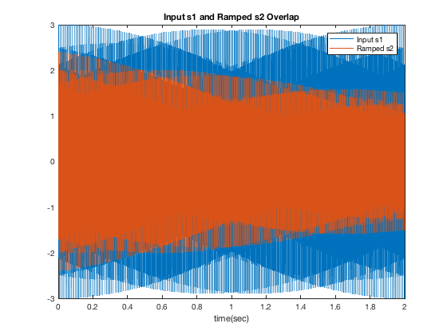

Contents
close; clear; clc;
Q1. Generate signal s1
fs = 4000;
dur = 2;
t = linspace(0,dur,fs*dur);
f1 = 500;
f2 = 1300;
s1 = 1*sin(2*pi*f1*t) + 2*sin(2*pi*f2*t);
Q2. Apply ramp to s1 (80% -> 50%)
ramp = linspace(0.8,0.5,length(s1));
s2 = ramp.*s1;
plot(t,s1),xlabel('time(sec)'); hold on;
plot(t,s2),xlabel('time(sec)'); title('Input s1 and Ramped s2 Overlap');
legend('Input s1','Ramped s2');

Q3. Apply Hamming-windowed 700Hz sinc low-pass
fc = 800;
r = fc/(fs/2);
tap = -256:256;
B = sinc(r*tap).*hamming(length(tap))';
B = B/sum(B);
A = 1;
s3 = filter(B,A,s2);
fvtool(B,A);
Q4. Do FFT s1,s2,s3 and plot spectra
NFFT = 2^nextpow2(length(t));
S1 = abs(fft(s1,NFFT));
S2 = abs(fft(s2,NFFT));
S3 = abs(fft(s3,NFFT));
bins = linspace(0,fs/2,NFFT/2);
subplot(311), plot(bins,S1(1:NFFT/2));
title('Input Signal'),xlabel('frequency(Hz)'),grid on,legend('s1 spectrum');
subplot(312), plot(bins,S2(1:NFFT/2));
title('Ramped Signal'),xlabel('frequency(Hz)'),grid on,legend('s2 spectrum');
subplot(313), plot(bins,S3(1:NFFT/2));
title('700Hz Low-pass Filtered Signal'),xlabel('frequency(Hz)'),grid on,legend('s3 spectrum');